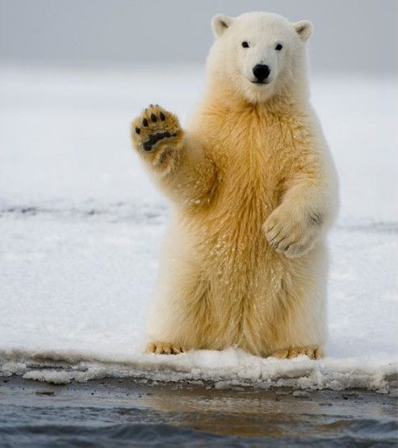

一
动物分类学家根据动物的各种特征(形态、细胞、遗传、生理、生态和地理分布等)进行分类，将动物依次分为6个主要等级，即门、纲、目、科、属、种。
二
根据化石研究，地球上最早出现的动物源于海洋。早期的海洋动物经过漫长的地质时期，逐渐演化出各种分支，丰富了早期的地球生命形态。
三
科学家们把现存的人类已知的动物根据体内有无脊柱分为无脊椎动物和脊椎动物两大类。科学家已经鉴别出46900多种脊椎动物。
四
科学家们还发现了130多万种无脊椎动物。这些动物中多数是昆虫，昆虫中多数是甲虫。动物界所有成员的身体都是由细胞组成的异养有机体。